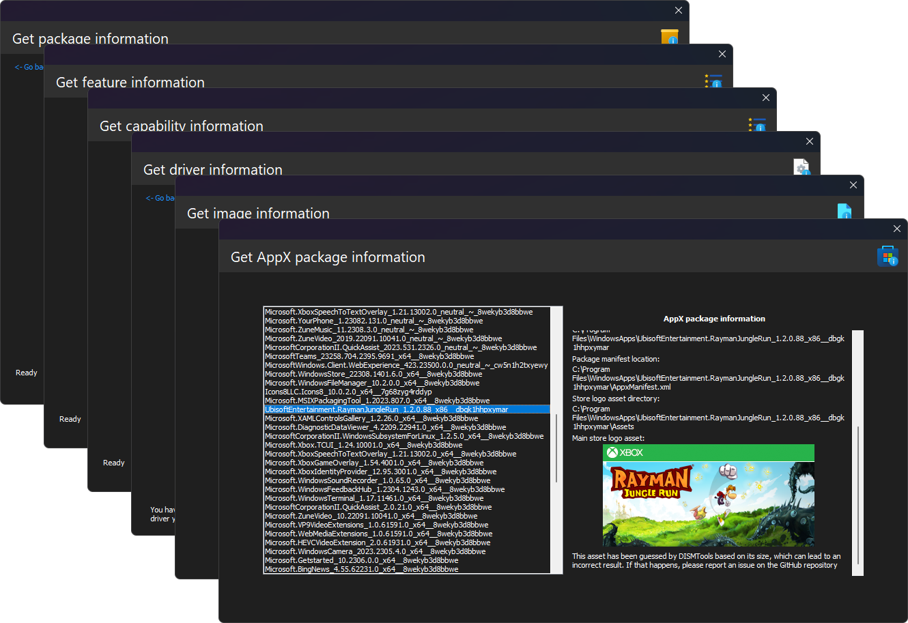
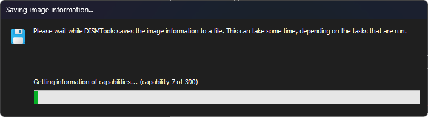

Information dialogs

Like their names suggest, information dialogs let you easily get specific information from a Windows image or installation with powerful and easy to use interfaces.
The overall action is supported on DISMTools 0.3.1 and newer.
Available dialogs
The following dialogs let you get specific information from a Windows image or installation:
| Dialog | Purpose | Remarks |
|---|---|---|
| Image information | Lets you get the information of any image file | - |
| Package information | Lets you get the information of either installed packages or packages you want to add |
|
| Feature information | Lets you get the information of all features present in a Windows image | - |
| AppX package information | Lets you get the information of installed AppX packages |
|
| Capability information | Lets you get the information of all capabilities present in a Windows image |
|
| Driver information | Lets you get the information of either installed drivers or the driver packages you want to add |
|
| Windows PE information | Lets you get the information of the target path and the scratch space amount on a Windows PE image |
|
Saving image information
DISMTools 0.3.3 and later let you save this information to a file.

This action will generate an image information report, which you can view at any time.
DISMTools 0.4 expands this functionality by showing a preview of the information report after completing the process. It also lets you print it from said preview window.